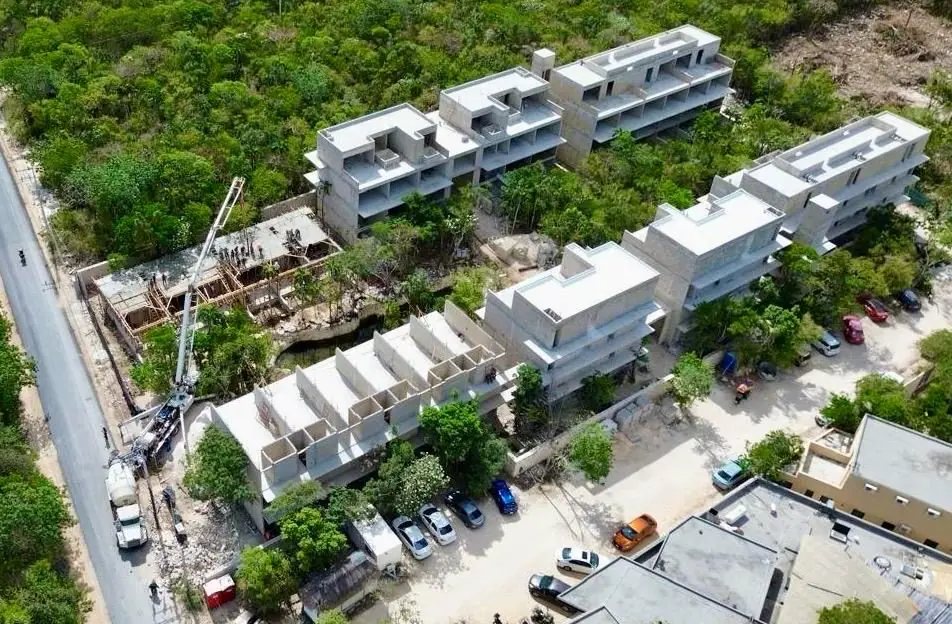

Construire un hôtel-boutique à Tulum : le guide d’investissement complet
Les boutiques de Tulum tournent à 70–90 % d’occupation en haute saison à 200–600 USD/nuit. Voici le calcul complet — par clé, par permis, par mois.

Chiffres clés : coût de développement tout compris 80 000–150 000 USD par clé (chambre), hors terrain. Éco-boutique de 12 clés : 1,0–1,8 M USD. ROI stabilisé cible : 12–18 %.
Décomposition par clé
| Composante | Par clé (USD) | Part |
|---|---|---|
| Construction (chambre + communs) | 45 000–85 000 | ~55 % |
| Piscine, restaurant, paysager | 15 000–30 000 | ~20 % |
| FF&E (mobilier, linge, équipement) | 10 000–20 000 | ~12 % |
| Design, permis, ingénierie | 6 000–12 000 | ~8 % |
| Pré-ouverture (staff, marketing, OTA) | 4 000–8 000 | ~5 % |
La pile de permis (démarrer 6–8 mois avant le chantier)
- SEMA/MIA — obligatoire à Tulum : 30 000–80 000 MXN, 2–4 mois ; 60 % de surfaces perméables, préservation des arbres, station d'épuration
- Licence municipale + zonage hôtelier
- Protección Civil, COFEPRIS (cuisine), licence d'alcool (30 000–80 000 MXN)
- Enregistrement RNT avant ouverture
Calendrier : 14–20 mois
| Phase | Mois |
|---|---|
| Design + permis (en parallèle) | 4–6 |
| Construction | 8–12 |
| FF&E + pré-ouverture | 2 |
Le calcul d'exploitation (exemple 12 clés)
ADR 250 USD × 65 % d'occupation annuelle × 12 clés = ~712 000 USD bruts. Coûts d'exploitation (staff, OTA 15–18 %, énergie, maintenance) : 55–65 % du CA. NOI : 250 000–320 000 USD → 14–18 % sur 1,6 M investi. Multiples de sortie : 8–12× le NOI.
Ce qui sépare les gagnants des 26 projets stoppés
- Permis d'abord — Tulum a stoppé 26 projets sans SEMA. Ne jamais bâtir sur des promesses.
- Autonomie en eau — citerne + traitement + secours ; CAPA ne portera pas un hôtel.
- Designer pour l'objectif photo — à Tulum, l'architecture EST le marketing.
- 15–25 % de réserve et contrat à prix fixe avec le constructeur (c'est nous).
Ce que le terrain et l’autorité imposent à Tulum
Avant la conception et avant le budget, voici ce qui s’applique dans cette zone :
- Commune: Tulum
- Régime environnemental: SEMA ; SEMARNAT sur la bande côtière
- Sol: karst sous forêt basse
- Nappe: profondeur moyenne
- Exposition au sel: selon le secteur
- Accès: route 307 et voies intérieures
La SEMA de l’État fixe le calendrier ; le dossier environnemental est la règle, pas l’exception.
- Procédure fédérale auprès de SEMARNAT : la décision environnementale est le chemin critique du projet. Comptez 4 à 8 mois avant la première excavation.
- L’autorisation SEMA de l’État précède le permis municipal : sans elle, la mairie n’ouvre pas de dossier.
- Sol karstique : étude de sol avec vérification des cavités avant de chiffrer les fondations. Une cavité découverte après coulage coûte plus cher que l’étude entière.
Comparez cette zone aux 40 autres de la Riviera Maya dans le vérificateur de zone.
Questions fréquentes
80 000–150 000 USD par clé tout compris (hors terrain). 12 clés : 1,0–1,8 M USD.
Stabilisé : 12–18 % sur coût. Exemple : 12 clés à 250 USD d'ADR et 65 % d'occupation = NOI de 250 000–320 000 USD.
SEMA/MIA (obligatoire), licence municipale, zonage hôtelier, Protección Civil, COFEPRIS, alcool, RNT. Démarrer 6–8 mois avant — nous gérons tout.
14–20 mois : 4–6 design+permis, 8–12 chantier, 2 pré-ouverture.
Oui — structure standard : SA de CV exploite, fideicomiso ou la SA détient l'immobilier. Nous coordonnons avocats et comptables.
Prêt à lancer votre projet ?
196+ projets réalisés. Contrats à prix fixe. Devis gratuit sous 48 h.
Devis gratuitGarantie écrite 1 an18+ ans196+ projetsLicence & DRO